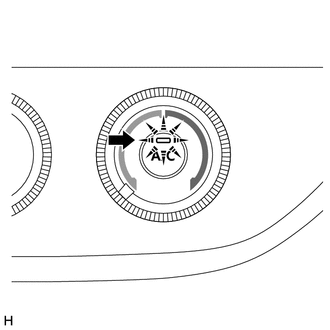

RM3140CG
_58
车辆内饰
_024012
暖风/空调
_0116103
空调系统（手动空调系统）
D
暖风/空调 空调系统（手动空调系统） 检查模式程序
正常工作时的制冷剂不足检查（检查空调开关指示灯和 DTC）
a.
起动发动机。
b.

满足以下条件时，检查并确认空调开关指示灯一直亮。
| 项目 | 条件 |
|---|---|
| 空调开关 | 打开 |
| 空调工作时间 | 15 分钟或更长时间 |
| 环境温度* | 0 至 49°C（32 至 120°F） |
| 发动机冷却液温度 | 45°C (113°F) 或更高 |
*：如果环境温度不在所示范围内，则不要进行该检查。
- 提示：
-
如果系统中的制冷剂量不足，则 11 分钟后空调开关指示灯和空调系统关闭。
c.
将 GTS 连接到 DLC3。
d.
检查 DTC B14B8。
单击此处 车辆内饰>暖风/空调>空调系统（手动空调系统）>B14B8201406,999999,_58,_024012,_0116103,RM100000000D863,B14B8
| 结果 | 制冷剂量 | 纠正措施 |
|---|---|---|
| 输出 DTC B14B8 | 空或很少 | 用卤素泄漏检测器检查制冷剂是否泄漏，如有必要，则进行维修。
单击此处 (  201406,999999,_58,_024012,_0117205,RM100000000DCQL,) 201406,999999,_58,_024012,_0117205,RM100000000DCQL,)
|
| 未输出 DTC B14B8 | 适量或不足 | 使用 GTS 进行制冷剂不足检查。 |
使用 GTS 进行制冷剂不足检查
a.
将 GTS 连接到 DLC3。
b.
起动发动机。
c.
打开 GTS。
d.
进入以下菜单：Body Electrical / Air Conditioner / Utility / Refrigerant Gas Volume Check。
- Body Electrical > Air Conditioner > Utility
-
检测仪显示 Refrigerant Gas Volume Check - 50005 121 2186
e.
满足以下条件时，根据 GTS 上的显示进行制冷剂不足检查。
| 项目 | 条件 |
|---|---|
| 空调开关 | 打开 |
| 环境温度* | 0 至 49°C（32 至 120°F） |
| 鼓风机速度等级 | HI |
*：如果环境温度不在所示范围内，则不要进行该检查。
- 提示：
- ·
有关详情，请参考《GTS 操作手册》。
·如果系统中的制冷剂量不足，则 GTS 上显示指示制冷剂不足的信息且空调系统关闭。
·使用 GTS 进行制冷剂不足检查时，未存储 DTC。
| 结果 | 制冷剂量 | 纠正措施 |
|---|---|---|
| 制冷剂不足 | 不足或泄漏 | 1.
用卤素泄漏检测器检查制冷剂是否泄漏，如有必要，则进行维修。 2.
排空空调系统并加注适量新的或净化过的制冷剂。 |
| 制冷剂适量 | 适量 | - |